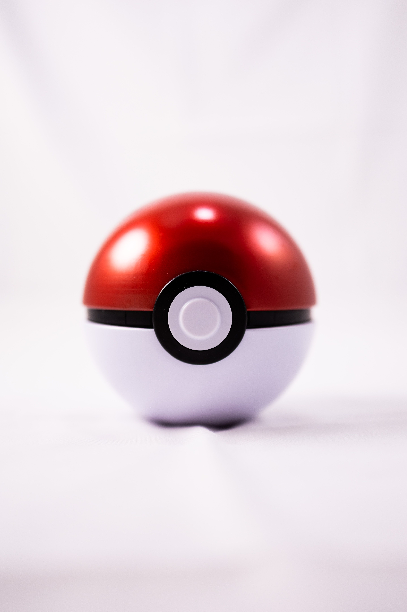

A Poké Ball (Japanese: モンスターボール Monster Ball) is a type of item that is critical to a Trainer's quest, used for catching and storing Pokémon.

"the red and white pokeball" by Caleb Oquendo, via Camera Canon EOS R6Developed by Ken Sugimori, and as a part of the Game Freaks pokemon series, players can catch Pokémon in the wild using pokeballs, engaging with them in a Pokémon battle
Pokémon[a] is a Japanese series of creature collector role-playing video games developed by Game Freak[b] and published by Nintendo and The Pokémon Company under the Pokémon franchise. It was created by Satoshi Tajiri with assistance from Ken Sugimori. The first games, Pocket Monsters Red and Green, were released in 1996 in Japan for the Game Boy, later released outside of Japan as Pokémon Red Version and Blue Version.
| pokeballs | catch rates | extra conditions |
|---|---|---|
| Poke Ball | x1 | none |
| Great Ball | 1.5x | none |
| Ultra Ball | 2× | none |
| Master Ball | n/a | Never fails, except against unidentified ghosts, the ghost Marowak, Kyurem when under Ghetsis's control, and Nihilego at Aether Paradise |
| Safari Ball | 2×,1.5x/1x | only works in Safari zones |
| Level Ball | 1x/2×/4x/8x | 1× if the player's Pokémon is the same level as or a lower level than the wild Pokémon 2× if the player's Pokémon is at a higher level than the wild Pokémon but less than double it 4× if the player's Pokémon is more than double but less than four times the level of the wild Pokémon 8× if the player's Pokémon is of a level four times or more than that of the wild Pokémon |
| Lure Ball | 1× or 3×GSCHGSS/5×Gen VII/4×Gen VIII-IX | 3×GSCHGSS/5×Gen VII/4×Gen VIII-IX only if fishing 4× if used against Pokémon in or on waterSV |
| Moon Ball | 1x or 4x | Always 1× due to a glitchGSC
4× only if used on a Pokémon in the Nidoran♀, Nidoran♂, Clefairy, Jigglypuff, or Skitty familiesHGSS 4× only if used on Nidorina, Nidorino, Clefairy, Jigglypuff, Skitty, or MunnaGen VII+ |
| Friend Ball | 1× | none |
| Love Ball | 1× or 8× | 8× only if used on a Pokémon of the same species and gender as the player's Pokémon due to a glitch 8× only if used on a Pokémon of the same species as, but opposite gender of, the player's Pokémon |
| Heavy Ball | -20, 0, +20, +30 or +40 | -20 if used on Pokémon weighing less than:225.8 lbs. (102.4 kg) 451.5 lbs. (204.8 kg) Catch rate is set to 1 if it becomes negative Catch rate is set to 0 if it becomes negative, making the catch impossible SM No modifier if used on Pokémon weighing between:225.8 lbs. (102.4 kg) and 451.5 lbs. (204.8 kg)GSC 220.46 lbs. (100 kg) and 440.92 (200 kg) lbs. +20 if used on Pokémon weighing between: 451.5 lbs. (204.8 kg) and 677.3 lbs. (307.2 kg) 440.92 lbs. (200 kg) and 661.38 lbs. (300 kg) +30 if used on a Pokémon weighing... between 677.3 lbs. (307.2 kg) and 903 lbs. (409.6 kg) more than 661.38 lbs. (300 kg)Gen VI +40 if used on Pokémon weighing more than 903 lbs. (409.6 kg), or if used on Tauros, Kadabra, or SunfloraC |
| Fast Ball | 1× or 4× | 4× only if used on Magnemite, Grimer, or Tangela 4× only if used on a Pokémon with a base Speed of at least 100 |
i picked this because uh i huh uhhhhh its a